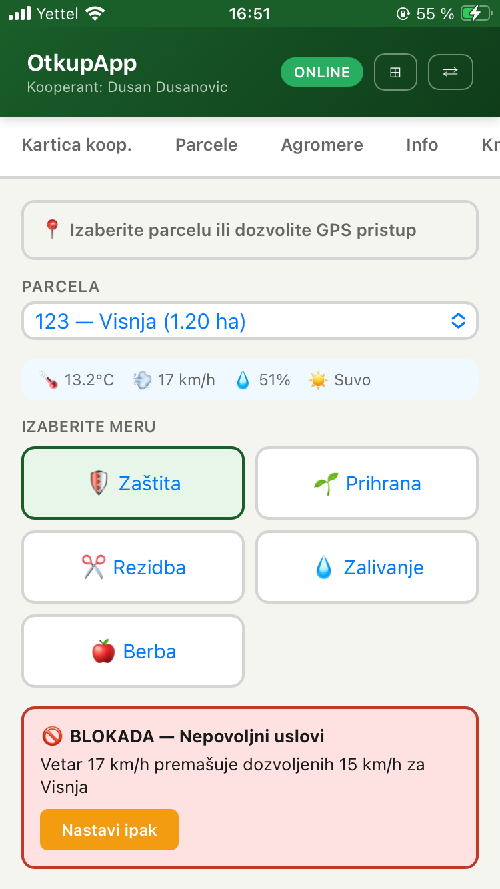
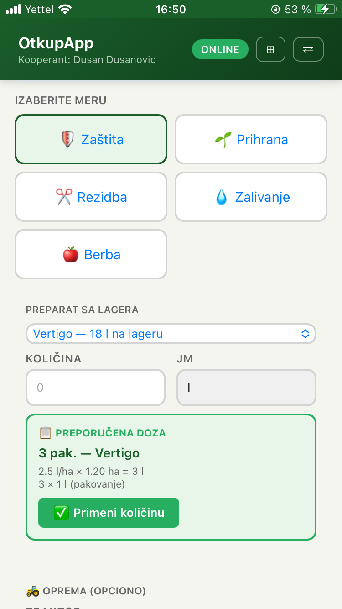
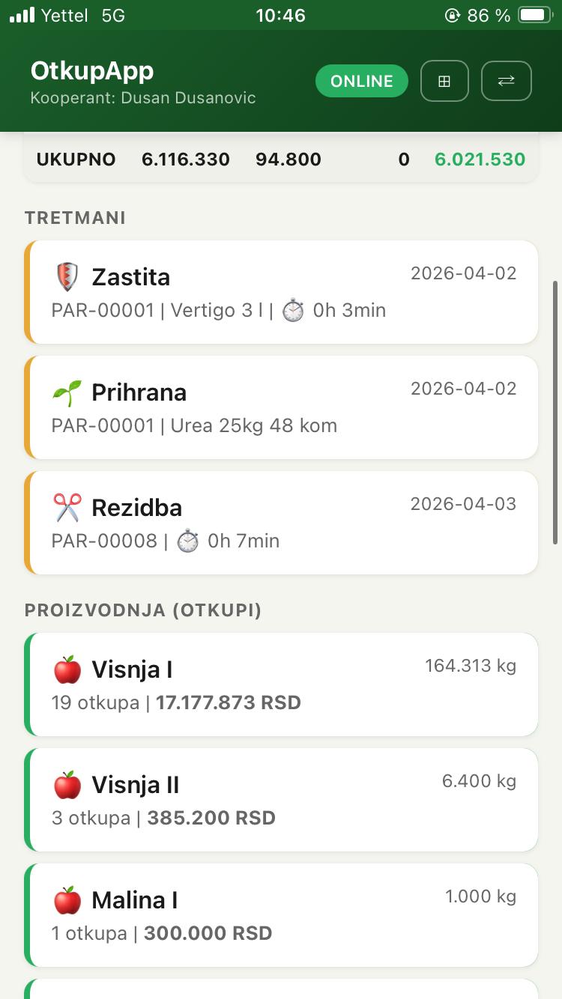

Proces
Kako funkcioniše AgriX Gazdinstvo.
1
Birate parcelu i meru
Sistem povezuje rad sa konkretnom parcelom, kulturom i tipom aktivnosti. Meteo uslovi se učitavaju odmah.

2
Rad se beleži dok traje
Preparat, količina, oprema, vreme rada i drugi podaci unose se u istom toku. Sistem prikazuje preporučenu dozu po površini parcele.

3
Podaci ostaju povezani sa lagerom i troškovima
Potrošnja preparata, prihrane i ostalih inputa automatski ulazi u širi pregled rada i troškova.

4
Sve ulazi u bilans proizvodnje
Mere, troškovi i proizvodnja formiraju jasan pregled rezultata po parceli i za celu sezonu.